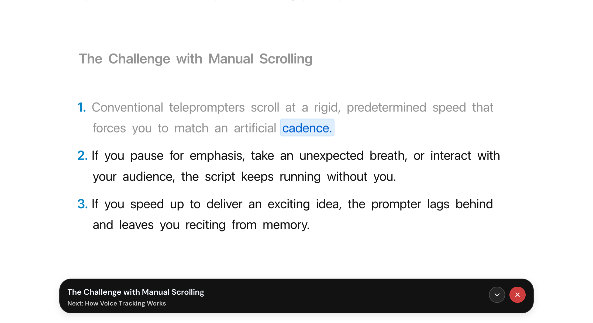
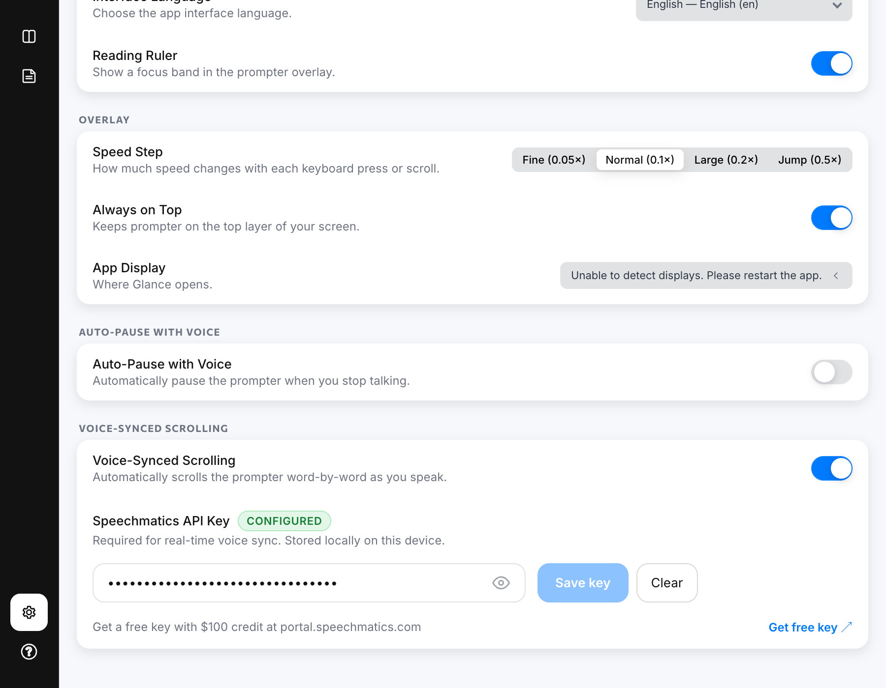

The Problem with Fixed-Speed Teleprompters
Every remote presenter knows the feeling: you set your teleprompter to 130 words per minute, launch your meeting, and begin presenting. Within thirty seconds, something breaks your rhythm.
You pause to take a breath. A prospect asks a question. You take five seconds to emphasize a critical statistic. Meanwhile, your teleprompter’s timer doesn’t care—it continues relentlessly scrolling down your screen.
Suddenly, you’re forced to reach for your mouse, click frantically to pause, rewind your notes, and re-find your place. In that split second, your eye contact drops, your posture stiffens, and your audience sees you “operating software” rather than leading a conversation.
The Golden Rule of Live Presenting: You should never have to adjust your speaking speed to match your software. Your software must adjust to match your voice.
What is Voice-Synced Scrolling?
Voice Sync is real-time, speech-directed script tracking. Rather than advancing text on a mechanical timer, a voice-synced prompter listens to your microphone, transcribes your spoken words using low-latency speech recognition, and matches them against your script in real time.
As you speak each word, the teleprompter marks your exact place with an active highlight and advances the script line-by-line with fluid spring physics.

Glance Voice Sync: The active spoken word is cleanly highlighted with a subtle pill accent, while past words fade gently and upcoming text stays crisp.
Key Advantages of Voice Sync on Live Calls
1. Complete Freedom of Pace
Speak as fast or as slowly as you wish. If you speed up through an introductory slide, the script accelerates with you. If you pause for three seconds to let an important point sink in, the script halts instantly right where you stopped.
2. Instant Auto-Arming on Launch
Because Voice Sync is strictly speech-driven, Glance automatically arms the speech listener the moment you open the overlay. Unlike standard teleprompter mode (which starts paused so text doesn't scroll away), Voice Sync doesn't move a single pixel until you actually speak. You simply launch Glance, look at your camera lens, and begin your presentation.
3. Resilient to Stumbles & Improvisation
Live human speech is never 100% linear. Real-time voice synchronization uses an adaptive lookahead matching window with phonetic tolerance. If you accidentally repeat a phrase, stumble on a word, or insert filler words like “um” or “you know”, the engine ignores the noise and stays firmly anchored to your script.
4. Zero Mouse, Trackpad, or Foot Pedal Interaction
In high-stakes video calls (especially when sharing slides or demoing software), your hands are busy clicking through screens. Voice Sync ensures your eyes and hands remain completely free from prompter management.
How to Set Up Voice Sync in Glance
Glance connects directly from your machine to Speechmatics—one of the world's most accurate real-time speech recognition engines—using your own private API key.

Settings view in Glance: One toggle activates Voice-Synced Scrolling, with direct link to claim free trial credits.
Quick 3-Minute Setup
- Claim Free Trial Credits: Sign up at portal.speechmatics.com. Speechmatics provides up to $100 in free initial usage credits with no credit card required upfront.
- Copy Your API Key: From the Speechmatics portal dashboard, generate an API key and copy it to your clipboard.
- Save in Glance: Open Glance, navigate to Settings (gear icon), paste your key into the Speechmatics API Key field, and toggle Voice-Synced Scrolling ON.
- Launch & Present: Click Launch Prompter. The listener will arm automatically—just start reading!
Privacy & Local-First Architecture
Confidential sales demos, internal team updates, and executive briefings require strict confidentiality. Glance was designed with a privacy-first, zero-knowledge philosophy:
- Local-First Notes: Your scripts and markdown notes never touch Glance servers. They are stored 100% locally on your machine.
- Direct Encrypted Stream: When Voice Sync is active, audio streams over an encrypted WebSocket directly from your computer to Speechmatics using your own private credentials.
- Zero Middleman Relay: Glance servers never receive, relay, intercept, or record your voice or script data.
Ready to Present Hands-Free?
Download Glance for macOS and Windows. Keep your eyes on the camera, speak naturally, and let the prompter follow you.
Download GlanceLegal Disclaimer: Glance is an independent local-first application and is not affiliated with, sponsored by, or endorsed by Speechmatics in any way. Speechmatics is a registered trademark of Speechmatics Ltd.